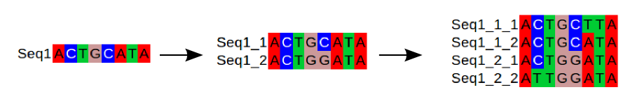
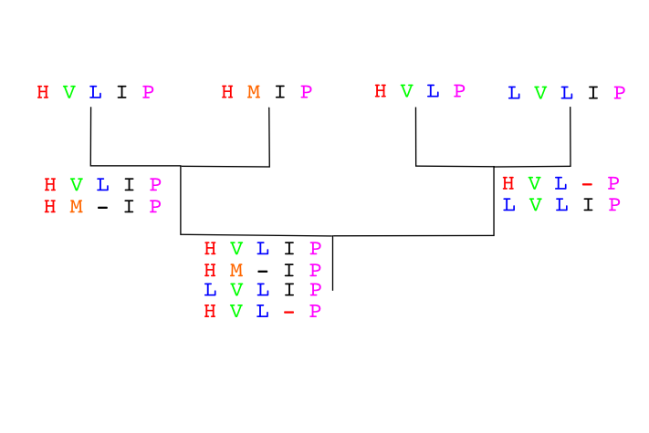

Multiple Sequence Alignment¶
Introduction¶
A Multiple Sequence Alignment is an alignment of more than two sequences. We could align several DNA or protein sequences.

Some of the most usual uses of the multiple alignments are:
phylogenetic analysis
conserved domains
protein structure comparison and prediction
conserved regions in promoteres
The multiple sequence alignment asumes that the sequences are homologous, they descend from a common ancestor. The algorithms will try to align homologous positions or regions with the same structure or function.
{kind=link}
Multiple alignment algorithm¶
Multiple alignments are computationally much more difficult than pair-wise alignments. It would be ideal to use an analog of the Smith & Waterman algorithm capable of looking for optimal alignments in the diagonals of a multidimensional matrix given a scoring schema. This algorithm would had to create a multidimensional matrix with one dimension for each sequence. The memory and time required for solving the problem would increase geometrically with the lenght of every sequence. Given the number of sequences usually involved no algorithm is capable of doing that. Every algorithm available reverts to a heuristic capable of solving the problem in a much faster time. The drawback is that the result might not be optimal.
Usually the multiple sequence algorithms assume that the sequences are similar in all its length and they behave like global alignment algorithms. They also assume that thre are not many long insertions and delections. Thus the algorithms will work for some sequences, but not for others.
These algorithms can deal with sequences that are quite different, but, as in the pair-wise case, when the sequences are very different they might have problems creating good algorithm. A good algorithm should align the homologous positions or the positions with the same structure or function.
It we are trying to align two homologous proteins from two species that are phylogenetically very distant we might align quite easily the more conserved regions, like the conserved domains, but we will have problems aligning the more different regions. This was also the case in the pair-wise case, but remember that the multiple alignment algorithms are not guaranteed to give back the best possible alignment.
These algorithms are not design to align sequences that do not cover the whole region, like the reads from a sequencing project. There are other algorithms to assemble sequencing projects.
Progressive contruction algorithms¶
In Multiple Sequence Alignment it is quite common that the algorithms use a progressive alignment strategy. These methods are fast and allow to align thousands of sequences.
Before starting the alignemnt, as in the pair-wise case, we have to decide which is the scoring schema that we are going to use for the matches, gaps and gap extensions. The aim of the alignment would be to get the multiple sequence alignment with the highest score possible. In the multiple alignment case we do not have any practical algorithm that guarantees that it going to get the optimal solution, but we hope that the solution will be close enough if the sequences comply with the restrictions assumed by the algorithm.
The idea behind the progressive construction algorithm is to build the pair-wise alignments of the more closely related sequences, that should be easier to build, and to align progressively these alignments once we have them. To do it we need first to determine which are the closest sequence pairs. One rough and fast way of determining which are the closest sequence pairs is to align all the possible pairs and look at the scores of those alignments. The pair-wise alignments with the highest scores should be the ones between the more similar sequences. So the first step in the algorithm is to create all the pair-wise alignments and to create a matrix with the scores between the pairs. These matrix will include the similarity relations between all sequences.
Once we have this matrix we can determine the hierarchical relation between the sequences, which are the closest pairs and how those pairs are related and so on, by creating a hierarchical clustering, a tree. We can create these threes by using different fast algorithms like UPGMA or Neighbor joining. These trees are usually known as guide trees.

An example:
{kind=link}
Another example:
Secuences:
IMPRESIONANTE
INCUESTIONABLE
IMPRESO
Scores:
IMPRESIONANTE X IMPRESO 7/13
IMPRESIONANTE X INCUESTIONABLE 10/14
INCUESTIONABLE X IMPRESO 4/14
Scoring pair-wise matrix:
IMPRESIONANTE INCUESTIONABLE IMPRESO
IMPRESIONANTE 1 10/14 7/13
INCUESTIONABLE 10/14 1 4/14
IMPRESO 7/13 4/14 1
Guide Tree:
|--- IMPRESIONANTE
|---|--- INCUESTIONABLE
|
|----- IMPRESO
The first alignment would be: IMPRESIONANTE x INCUESTIONABLE
IMPRES-IONABLE
INCUESTIANABLE
Now we align IMPRESO to the previous alignment.
IMPRES-IONANTE
INCUESTIONABLE
IMPRES--O-----
We have no guarantee that the final is the one with the highest score.
The main problem of these progressive alignment algorithms is that the errors introduced at any point in the process are not revised in the following phases to speed up the process. For instance, if we introduce one gap in the first pair-wise alignment this gap will be propagated to all the following alingments. If the gap was correct that is fine, but if it was not optimal it won’t be fixed. These methods are specially prone to fail when the sequences are very different or phylogenetically distant.
Sequences to align already in the order given by a guide tree:
Seq A GARFIELD THE LAST FAT CAT
Seq B GARFIELD THE FAST CAT
Seq C GARFIELD THE VERY FAST CAT
Seq D THE FAT CAT
Step 1
Seq A GARFIELD THE LAST FAT CAT
Seq B GARFIELD THE FAST CAT
Step 2
Seq A GARFIELD THE LAST FA-T CAT
Seq B GARFIELD THE FAST CA-T
Seq C GARFIELD THE VERY FAST CAT
Step 3
Seq A GARFIELD THE LAST FA-T CAT
Seq B GARFIELD THE FAST CA-T
Seq C GARFIELD THE VERY FAST CAT
Seq D -------- THE ---- FA-T CAT
Historically the most used of the progressive multiple alignment algorithms was CLUSTALW. Nowadays CLUSTALW is not one of the recommended algorithms anymore because there are other algorithms that create better alignments like Clustal Omega or MAFFT. MAFFT was one of the best contenders in a multiple alignment software comparison.
T-Coffee is another progressive algorithm. T-Coffee tries to solve the errors introduced by the progressive methods by taking into account the pair-wise alignments. First it creates a library of all the possible pair-wise alignments plus a multiple alignment using an algorithm similar to the CLUSTALW one. To this library we can add more alignments based on extra information like the protein structure or the protein domain composition. Then it creates a progressive alignment, but it takes into accounts all the alignments in the library that relate to the sequences aligned at that step to avoid errors. The T-Coffe algorithm follows the steps:
Create the pair-wise alignments
Calculate the similirity matrix
Create the guide tree
Build the multiple progressive alignment following the tree, but taking into account the information from the pair-wise alignments.
T-Coffee is usually better than CLUSTALW and performs well even with very different sequences, specially if we feed it more information, like: domains, structures or secondary structure. T-Coffee is slower than CLUSTALW and that is one of its main limitations, it can not work with more than few hundred sequences.
Iterative algorithms¶
These methods are similar to the progressive ones, but in each step the previous alignments are reevaluated. Some of the most popular iterative methods are: Muscle and MAFFT are two popular examples of these algorithms.
Alignment evaluation¶
Once we have created our Multiple Sequence Alignment we should check that the result is OK. We could open the multiple alignment in a viewer to assess the quality of the different regions of the aligment or we could automate this assesment. Usually not all the regions have an alignment of the same quality. The more conserved regions will be more easily aligned than the more variable ones.
It is quite usual to remove the regions that are not well aligned before doing any further analysis, like a phylogenetic reconstruction. We can remove those regions manually or we can use an especialized algorithm like trimAl.
Software for multiple alignments¶
There are different software packages that implement the described algorithms. These softwares include CLI and GUI programs as well as web services.
One package usually employed is MEGA. MEGA is a multiplatform software focused on phylogenetic analyses.
Jalview and STRAP a multiple alignment editor and viewer. Another old software, that has been abandoned by its developer is BioEdit.
In the EBI web server have some services to run several algorithms like: Clustal Omega , Kalign, MAFFT, and Muscle.